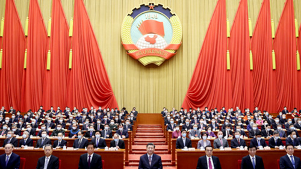

请横屏浏览
· 习近平主持中央政治局第二十次学习
· 共商国事，习近平在全国两会上，两会新语，总书记的民法典
· 第一观察｜习近平“2022两会时间”不寻常
· 非常两会，习近平生动诠释这一理念 向世传递这些重要信息
十三届全国人大四次会议在京开幕

3月4日，中国人民政治协商会议第十三届全国委员会第四次会议在北京人民大会堂开幕。这是习近平、李克强、栗战书、王沪宁、赵乐际、韩正、王岐山在主席台就座，汪洋代表政协第十三届全国委员会常务委员会向大会报告工作。
习近平参加内蒙古代表团审议
3月5日，中共中央总书记、国家主席、中央军委主席习近平参加十三届全国人大四次会议内蒙古代表团的审议。
微镜头|"'绿水青山就是金山银山'是增值的"
微镜头|"这个账总是要算的"
第四次参加内蒙古代表团审议 习近平提到这些关键点
十三届全国人大四次会议在京开幕-06
3月4日，中国人民政治协商会议第十三届全国委员会第四次会议在北京人民大会堂开幕。这是习近平、李克强、栗战书、王沪宁、赵乐际、韩正、王岐山在主席台就座，汪洋代表政协第十三届全国委员会常务委员会向大会报告工作。
十三届全国人大四次会议在京开幕-07
3月4日，中国人民政治协商会议第十三届全国委员会第四次会议在北京人民大会堂开幕。这是习近平、李克强、栗战书、王沪宁、赵乐际、韩正、王岐山在主席台就座，汪洋代表政协第十三届全国委员会常务委员会向大会报告工作。
十三届全国人大四次会议在京开幕-08
3月4日，中国人民政治协商会议第十三届全国委员会第四次会议在北京人民大会堂开幕。这是习近平、李克强、栗战书、王沪宁、赵乐际、韩正、王岐山在主席台就座，汪洋代表政协第十三届全国委员会常务委员会向大会报告工作。
03月
日